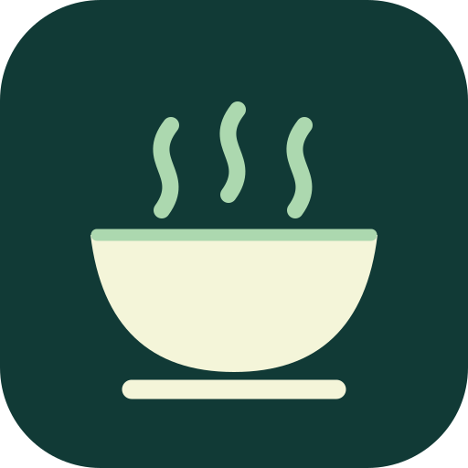

DEIN MITTAG AUF EINEN BLICK
Was gibt’s heute?
Menü I, vegetarisches Menü und Dessert – direkt aus dem veröffentlichten Speiseplan.
WOCHE AUSWÄHLENLädt …
HEUTE AUF DEM SPEISEPLAN

SpeiseplanBurgschule Nieder-Olm InoffiziellMenü I, vegetarisches Menü und Dessert – direkt aus dem veröffentlichten Speiseplan.